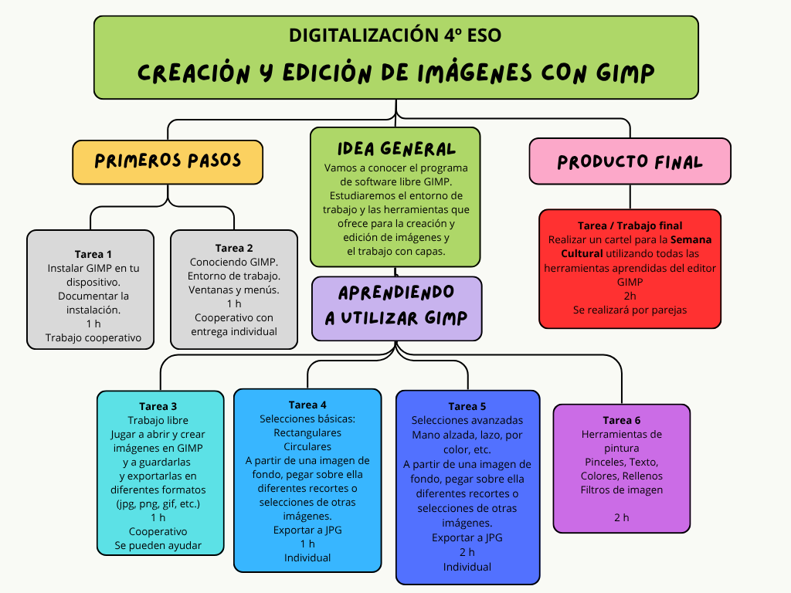

Esta Situación de Aprendizaje se encuadra en la asignatura Digitalización de 4º de ESO.
Volvemos a mostrar la imagen/esquema dónde puedes ver un resumen del desarrollo de esta Situación de Aprendizaje, las tareas a realizar, la temporalización aproximada con la que se pretende cumplir y algunas indicaciones adicionales que te servirán para ir trabajando en el desarrollo del tema y en la colaboración con tu compañer@s de clase.

Competencias Específicas y Criterios de Evaluación
En esta SdA se tienen en cuenta varios Criterios de Evaluación que pertenecen a dos Competencias Específicas de las especificadas para la asignatura de Digitalización de 4º de ESO.
|
Competencia Específica 2. Configurar el entorno personal de aprendizaje, interactuando y aprovechando los recursos del ámbito digital, para optimizar y gestionar el aprendizaje permanente. |
Criterio de Evaluación 2.2. Buscar, seleccionar y archivar información en función de sus necesidades haciendo uso de las herramientas del entorno personal de aprendizaje con sentido crítico y siguiendo normas básicas de seguridad en la red. |
| Criterio de Evaluacion 2.3. Crear, programar, integrar y reelaborar contenidos digitales de forma individual o colectiva, seleccionando las herramientas más apropiadas para generar nuevo conocimiento y contenidos digitales de manera creativa, respetando los derechos de autor y licencias de uso. |
|
Competencia Específica 4. Ejercer una ciudadanía digital crítica, conociendo las posibles acciones que realizar en la red, e identificando sus repercusiones, para hacer un uso activo, responsable y ético de la tecnología. |
Criterio de Evaluación 4.1. Hacer un uso ético de los datos y las herramientas digitales, aplicando las normas de etiqueta digital y respetando la privacidad y las licencias de uso y propiedad intelectual en la comunicación, colaboración y participación activa en las red, basadas en el respeto mutuo. |
Documento resumen dónde se relacionan las tareas propuestas en esta Situación de Aprendizaje, los Criterios de Evaluación, la forma de trabajo y la distribución temporal, y las herramientas informáticas (software) que utilizaremos.